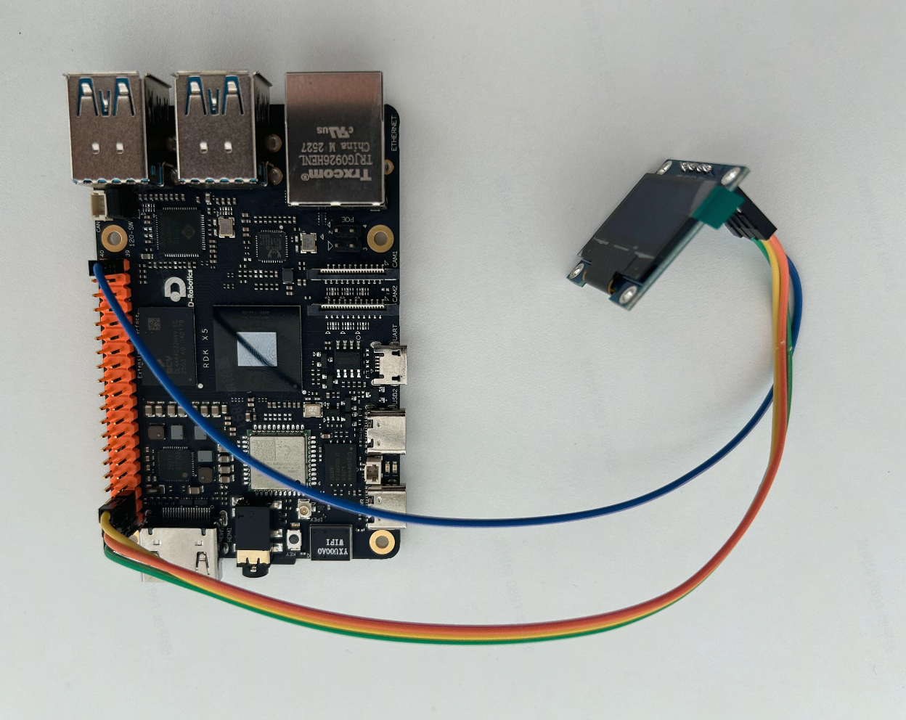

I2C 自带时钟线
SCL 打节拍，SDA 传数据。双方跟着同一个时钟工作，这就是同步通信。
SCL时钟
SDA数据
统一节拍
无需预先约定速度
无需预先约定速度
01
一对总线挂多个设备
主机先喊地址。只有地址匹配的设备回应，其他设备继续等待。
主机点名
0x3C传感器0x1D
OLED 屏0x3C
扩展芯片0x48
02
被点到的设备返回 ACK
地址匹配后，从机拉低 SDA 回应“到”。主机收到 ACK，随后开始传数据。
主机发送地址
0x3CACK
OLED 回应
ACK = 003
i2cdetect 挨个地址点名
扫描程序遍历总线地址，记录哪些设备返回 ACK。
0x35
0x36
0x37
0x38
0x39
0x3A
0x3B
0x3C
04
RDK X5 的两路 40pin I2C
今天 OLED 接在 3、5 号管脚，因此 Linux 总线号使用 5。
I2C5
Pin 3SDA
Pin 5SCL
本次实验使用
I2C0
Pin 27SDA
Pin 28SCL
05
OLED 接线只需要四根
供电使用 3.3V，数据线接入 I2C5。
VCCPin 1 · 3.3V
GNDPin 39
SDAPin 3
SCLPin 5

RDK X5 + OLED · I2C5
06
先确认设备在线
运行扫描命令。结果出现 3c，后面的代码才有通信基础。
$ i2cdetect -y 5
0 1 2 3 4 5 6 7 8 9 a b c d e f
30: -- -- -- -- -- -- -- -- -- -- -- -- 3c -- -- --
30: -- -- -- -- -- -- -- -- -- -- -- -- 3c -- -- --
设备在线 ✓
07
管脚功能异常时检查总线配置
在配置工具里确认 I2C 开关。修改配置后重启系统。
$ sudo srpi-config进入总线配置I2C · Enable保存设置REBOOT REQUIRED
08